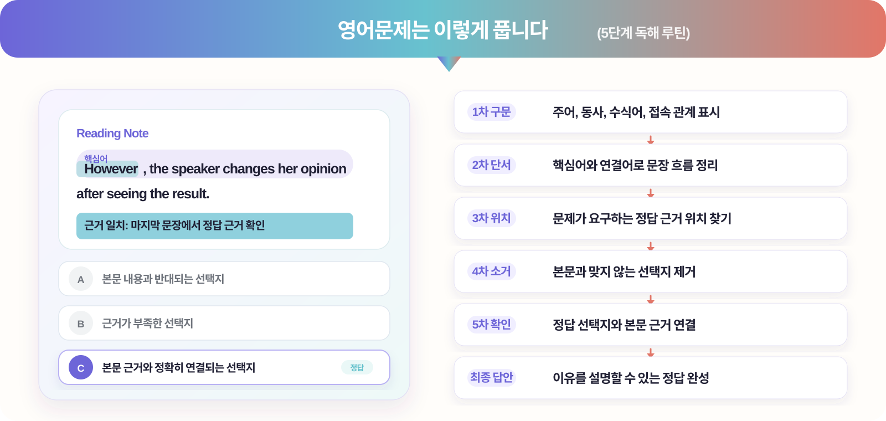

질문과 첨삭이 가능한 소수정예 수업
문법·독해·어휘·시간 관리 약점 분석
현재 실력과 다음 학습 순서 안내
학교별 범위와 변형 문제 집중 대비
Formula English Lab
외우던 영어를, 보이는 절차로 바꾸는 학원.
Admission
처음 오는 학생도, 현재 실력부터 차근차근 확인합니다.
학년, 학교, 최근 시험 상황과 상담 가능한 시간을 남깁니다.
45분 레벨테스트로 문법·독해·어휘·시간관리 약점을 분리합니다.
구문 표시와 선택지 판단 근거를 바탕으로 개인별 학습 출발점을 설명합니다.
레벨, 학교 일정, 목표에 맞춰 정규반 또는 보강 클리닉을 안내합니다.
Why formula?
왜 영어는 근거를 표시하며 풀어야 하나요?
시작 기준
긴 문장을 만나도 어디서부터 봐야 하는지 첫 판단 기준을 잡아줍니다.
풀이 단계
지문을 덩어리로 나누고, 정답을 고르는 이유를 문장 근거로 남기게 합니다.
선택지 소거
왜 정답인지뿐 아니라 왜 오답이 아닌지까지 근거를 남기며 판단합니다.
Proof note
왜 틀렸는지 보이나요?
Students choose answers by feeling.
① 지문을 끝까지 읽고도 핵심을 놓침
② 선택지 제거 근거가 없음
③ 비슷한 유형에서 반복 실수
핵심어와 연결어를 먼저 표시하고,
문장 역할 → 정답 위치 → 선택지 제거
정답과 오답의 근거를 수업 노트에 남깁니다.
Part & Curriculum
구문, 독해, 어휘, 선택지 판단까지 약점이 보이는 커리큘럼.
주어, 동사, 수식어, 접속 관계를 표시해 해석의 출발점을 잡습니다.
지문 속 핵심어, 연결어, 문장 역할을 찾아 정답 위치를 좁힙니다.
본문 근거와 맞지 않는 선택지를 하나씩 지우며 정답을 판단합니다.
틀린 문제를 해석 오류, 단서 누락, 선택지 착각으로 분류합니다.
영어를, 근거로 풀어라 (3단계 독해 시스템)
단계핵심방법학습결과
구조화
문장 구조와 문제 유형을 먼저 정리
무작정 해석보다 기준 있는 독해근거 풀이
정답 위치와 선택지 판단 이유를 기록
답을 고른 이유를 말할 수 있는 훈련오답 소거
본문 근거와 어긋나는 선택지를 제거
시험장에서 흔들리지 않는 판단력
Curriculum Map
문법을, 구조로 읽다
독해를, 근거로 풀다
작문을, 문장 단위로 잡다
Program
Program
진단부터 내신까지, 한 학생에 맞춰 운영합니다.
현재 실력 진단
문법, 독해, 어휘 약점과 풀이 속도를 확인해 학생별 학습 출발점을 잡습니다.
근거 중심 풀이
구문 분석과 근거 표시로 정답을 고른 이유와 오답 소거 과정을 훈련합니다.
내신 일정 반영
과제 수행, 오답 유형, 학교별 시험 일정을 반영해 다음 수업 계획을 조정합니다.
수업 대상
준비반
내신반
심화반
병행반
훈련반
완성반
클리닉
수업 운영
월수반월화수목
화목반월화수목
15:10
17:30
20:00
금 20:00
토 10:00
한 번의 수업 흐름
확인
표시
정리
설정
첫 3회 수업 후 교재와 진도 계획을 확정합니다.
단원 완료 시점마다 다음 학습 방향을 안내합니다.
내신 시험 준비 (4주 집중 관리)
내신프로그램 (1전략 + 6전술) 보기
학교별 기출 분석, 본문 변형, 서술형 대비, 시험 직전 오답 압축, 개인별 약점 리포트를 하나의 일정표로 정리합니다.
Care System
수업이 끝난 뒤에도 학습 흐름이 끊기지 않게 관리합니다.
원장 설계 커리큘럼
학년별 목표와 학교별 시험 흐름을 반영해 반 배정과 교재 순서를 설계합니다.
주간 학습 체크
숙제 수행, 오답 유형, 다음 주 미션을 학부모가 확인하기 쉬운 언어로 정리합니다.
시험 4주 관리
범위 확인, 변형 문제, 서술형 대비, 직전 오답 압축을 시험 일정에 맞춰 운영합니다.
Cases
학생과 학부모가 체감하는 변화.
“답을 외우는 대신 근거를 표시하니까 긴 지문을 읽을 때 덜 불안해졌어요.”
“틀린 이유가 문법인지 독해인지 보이니 복습할 때 무엇을 해야 할지 알겠어요.”
“변형 문제를 풀이 순서대로 접근해서 시험장에서 당황하는 일이 줄었어요.”
“선택지 제거 이유를 말하는 연습이 서술형 대비에도 도움이 됐어요.”
“매주 어떤 부분을 공부하는지 알 수 있어 집에서 지도하기가 훨씬 편해졌습니다.”
Contact
레벨테스트 후, 우리 아이에게 맞는 반을 안내합니다.
방문 상담
레벨테스트와 함께 진행방문 상담 예약
방문 상담 가능 시간
금 15:00 – 20:00 토 13:00 – 17:00 일 휴무
방문 전 예약 부탁드립니다. 기타 요일은 전화로 조율 가능합니다.레벨테스트 (NELT)
항목내용
시험 방식
온라인 기반 레벨 진단과 근거 표시 확인
진단 영역
어휘 · 문법 · 독해 · 시간 관리 4개 영역 / 45분
이후 절차
결과 확인 → 1:1 상담 → 반 배정과 학습 계획 안내
진단 시간
금 15:00–20:00 / 토 13:00–17:00 · 기타 요일 별도 문의
상담 후 제공되는 자료
Location
오시는 길
서울시 마포구 예시로 12, 3층 Formula English Lab
합정역 2번 출구 도보 4분 · 1층 카페 건물
건물 지하 주차장 1시간 지원
02-1234-2846
MAP네이버 지도와 카카오맵으로 길찾기 가능
FAQ
처음 상담 전 자주 묻는 질문.
수업은 어떤 방식으로 진행되나요?
레벨별 소수정예 수업으로 진행하며, 매 수업 구문 표시와 선택지 판단 근거를 확인합니다.
한 반 인원은 몇 명까지 가능한가요?
기본 정원은 최대 8명이며, 학년과 레벨에 따라 더 적은 인원으로 운영될 수 있습니다.
내신과 모의고사를 같이 준비하나요?
중등은 학교별 내신과 독해 루틴, 고등은 내신과 모의고사 유형을 함께 관리합니다.